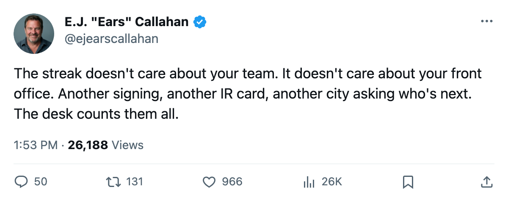
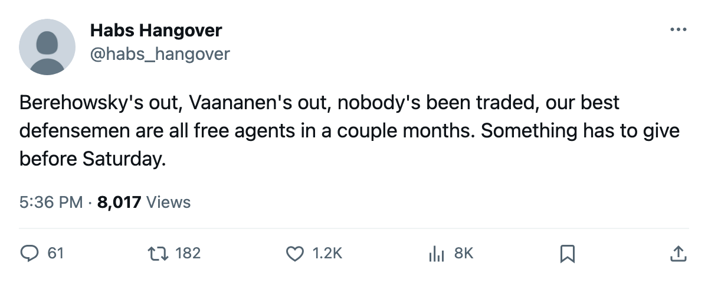

RUMOR METER: PHX Carries 3 of the Top 30 Expirings. It Signed a Blue-Liner for the Push. He's on IR. 🔥🔥
The Coyotes have 3 top-30 players walking in July, a knee on a new defenseman, and 3 days until what the calendar has as the trade deadline.
 E.J. "Ears" CallahanInsider · The Hot Stove
E.J. "Ears" CallahanInsider · The Hot Stove

PHX 3 top-30 expirings, no trade filed, signing goes to IR

The piece
 Phoenix Coyotes filed for
Phoenix Coyotes filed for  Drake Berehowsky74 on March 12 at $563,630. The league listed him with a knee, out until April 19. He joins
Drake Berehowsky74 on March 12 at $563,630. The league listed him with a knee, out until April 19. He joins  Ossi Vaananen75 (arm, out until April 16) on the injured list. 2 defensemen out with 3 days left before the trade deadline.
Ossi Vaananen75 (arm, out until April 16) on the injured list. 2 defensemen out with 3 days left before the trade deadline.
The Phoenix Coyotes roster carries 3 of the league's 30 best players on deals that expire in July:  Sean Burke86, a 38-year-old goaltender at 84 overall and $4.20M;
Sean Burke86, a 38-year-old goaltender at 84 overall and $4.20M;  Mike Sillinger83, a 33-year-old center at 84 and $1.80M; and
Mike Sillinger83, a 33-year-old center at 84 and $1.80M; and  Shane Doan81, a 28-year-old right wing at 82 and $2.40M. Morale Scale numbers: 87, 97 and 94. Nobody's unhappy enough to force a move.
Shane Doan81, a 28-year-old right wing at 82 and $2.40M. Morale Scale numbers: 87, 97 and 94. Nobody's unhappy enough to force a move.
The Coyotes sit at 74 points, 3rd in the Pacific behind  Dallas Stars at 92 and
Dallas Stars at 92 and  Mighty Ducks of Anaheim at 86. Per-point cost runs $0.65M on a payroll of $47.81M, with $11.56M in profit. The club holds 4 draft picks including 1 first-rounder. No trade involving a Coyote has been filed.
Mighty Ducks of Anaheim at 86. Per-point cost runs $0.65M on a payroll of $47.81M, with $11.56M in profit. The club holds 4 draft picks including 1 first-rounder. No trade involving a Coyote has been filed.
This is the 3rd rental-market story this desk has run in 10 days.  Chicago Blackhawks carries 4 top-30 expirings and sits 5th in the Central on 63 points.
Chicago Blackhawks carries 4 top-30 expirings and sits 5th in the Central on 63 points.  Ottawa Senators carries 3 on 67, 4th in the Northeast. Phoenix Coyotes carries 3 on 74, 3rd in the Pacific.
Ottawa Senators carries 3 on 67, 4th in the Northeast. Phoenix Coyotes carries 3 on 74, 3rd in the Pacific.
Berehowsky is 1 of 5 new signings filed since March 11 to land on the injured list. The streak of consecutive signings who got hurt reached 7 before  Colorado Avalanche signed Chris McAllister and he stayed healthy. The current streak sits at 4:
Colorado Avalanche signed Chris McAllister and he stayed healthy. The current streak sits at 4:  Anson Carter82 (abdomen, out until April 24), Kurtis Foster73 (rib, out until April 8),
Anson Carter82 (abdomen, out until April 24), Kurtis Foster73 (rib, out until April 8),  Peter Bondra88 (neck, out until March 25) and Berehowsky (knee, out until April 19).
Peter Bondra88 (neck, out until March 25) and Berehowsky (knee, out until April 19).
At $47.81M returning 74 points, PHX can afford to buy. But 4 picks and 1 first means it can't sell depth it doesn't have, and none of those 3 top-30 expirings will push the issue on their own. League sources say the phone hasn't rung.
The desk's read: PHX stands pat. Burke at 38 is a one-year problem. Sillinger at $1.80M is re-signable. Doan at 28 and $2.40M is the one worth a raise. Deadline passes with no Coyote in a trade.

